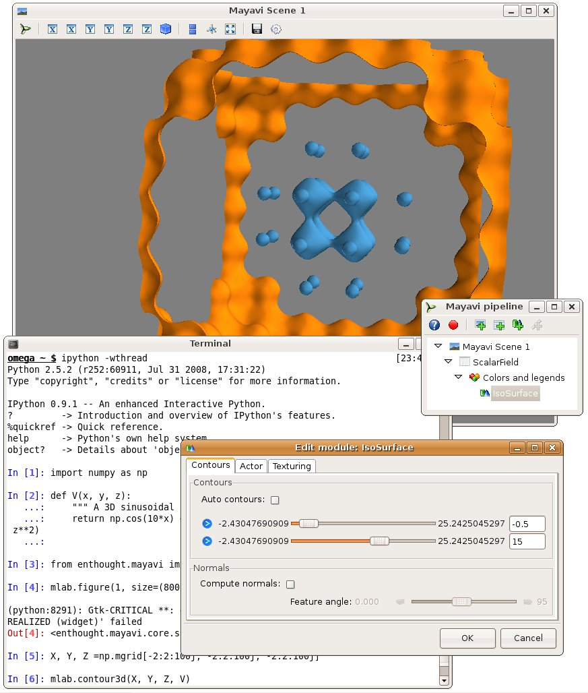
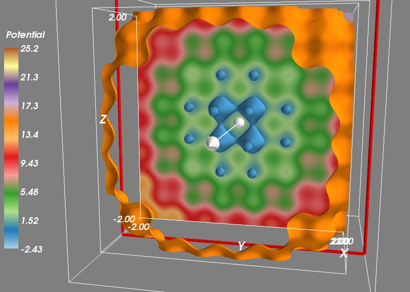

Using Mayavi with scipy¶
This tutorial example shows you how you can use Mayavi interactively to visualize numpy arrays while doing numerical work with scipy. It assumes that you are familiar with numerical Python tools, and shows you how to use Mayavi in combination with these tools.
Let us study the trajectories of a particle in a potential. This is a very common problem in physics and engineering, and visualization of the potential and the trajectories is key to developing an understanding of the problem.
The potential we are interested is a periodic lattice, immersed in a parabolic confinement. We will shake this potential and see how the particle jumps from a hole of the lattice to another. The parabolic confinement is there to limit the excursions of the particle:
import numpy as np
def V(x, y, z):
""" A 3D sinusoidal lattice with a parabolic confinement. """
return np.cos(10*x) + np.cos(10*y) + np.cos(10*z) + 2*(x**2 + y**2 + z**2)
Now that we have defined the potential, we would like to see what it looks like in 3D. To do this we can create a 3D grid of points, and sample it on these points:
X, Y, Z = np.mgrid[-2:2:100j, -2:2:100j, -2:2:100j]
V(X, Y, Z)
We are going to use the mlab module (see mlab: Python scripting for 3D plotting) to interactively visualize this volumetric data. For this it is best to type the commands in an interactive Python shell, either using the built-in shell of the Mayavi2 application, on in ipython –gui=qt. Let us visualize the 3D isosurfaces of the potential:
from mayavi import mlab
mlab.contour3d(X, Y, Z, V)
We can interact with the visualization created by the above command by rotating the view, but to get a good understanding of the structure of the potential, it is useful to vary the iso-surfaces. We can do this by double-clicking on the IsoSurface in the Mayavi pipeline tree (if you are running from ipython, you need to click on the Mayavi icon on the scene to pop up the pipeline). This opens a dialog which lets us select the values of the contours used. A good view of the potential can be achieved by turning off auto contours and choosing -0.5 as a first contour value (eg by entering it in the text box on the right, and pressing tab). A second contour can be added by clicking on the blue arrow and selecting “Add after”. Using a value of 15 gives a nice result.
Warning
Note that the “Add after” UI formerly crashed on Linux with the wxPython backend for versions of Mayavi up to 3.2.0 (see Known bugs and issues for all know bugs).
We can now click on the Colors and legends on the pipeline and change the colors used, by selecting a different LUT (Look Up Table). Let us select ‘Paired’ as it separates well levels.
To get a better view of the potential, we would like to display more contours, but the problem with this approach is that closed contours hide their interior. On solution is to use a cut plane. Right-click on the IsoSurface node and add a ScalarCutPlane through the “Add module” sub menu. You can move the cut plane by clicking on it and dragging.
To make the link between our numpy arrays and the visualization, we can use the same menu to add an Axes and an Outline. Finally, let us add a colorbar. We can do this by typing:
mlab.colorbar(title='Potential', orientation='vertical')
Or using the options in the LUT dialog visited earlier.
We want to study the motion of a particle in this potential. For this we need to derive the corresponding force, given by the gradient of the potential. We create a gradient function:
def gradient(f, x, y, z, d=0.01):
""" Return the gradient of f in (x, y, z). """
fx = f(x+d, y, z)
fx_ = f(x-d, y, z)
fy = f(x, y+d, z)
fy_ = f(x, y-d, z)
fz = f(x, y, z+d)
fz_ = f(x, y, z-d)
return (fx-fx_)/(2*d), (fy-fy_)/(2*d), (fz-fz_)/(2*d)
To check that our gradient function works well, let us visualize the vector field it creates. To avoid displaying too many vectors, we will evaluate the gradient only along a cut for X=50, and every three points on our grid:
Vx, Vy, Vz = gradient(V, X[50, ::3, ::3], Y[50, ::3, ::3], Z[50, ::3, ::3])
mlab.quiver3d(X[50, ::3, ::3], Y[50, ::3, ::3], Z[50, ::3, ::3],
Vx, Vy, Vz, scale_factor=-0.2, color=(1, 1, 1))

Now we can use scipy to integrate the trajectories. We first have to define a dynamical flow, the function that returns the derivative of the different parameters as a function of these parameters and of time. The flow is used by every ODE (ordinary differential equation) solver, it give the dynamic of the system. The dynamics we are interested in is made of the force deriving from the potential, which we shake with time in the three directions, as well as a damping force. The damping coefficient and the amount and frequency of shaking have been tuned to give an interesting dynamic.
def flow(r, t):
""" The dynamical flow of the system """
x, y, z, vx, vy, vz = r
fx, fy, fz = gradient(V, x-.2*np.sin(6*t), y-.2*np.sin(6*t+1), z-.2*np.sin(6*t+2))
return np.array((vx, vy, vz, -fx - 0.3*vx, -fy - 0.3*vy, -fz - 0.3*vz))
Now we can integrate the trajectory:
from scipy.integrate import odeint
# Initial conditions
R0 = (0, 0, 0, 0, 0, 0)
# Times at which we want the integrator to return the positions:
t = np.linspace(0, 50, 500)
R = odeint(flow, R0, t)
And we can now plot the trajectories, after removing the cut plane and the vector field by right-clicking on the corresponding pipeline node and selecting delete. We also turn the first color bar off in the corresponding Colors and legends node. We plot the trajectories with extra scalar information attached to it, to display the time via the colormap:
x, y, z, vx, vy, vz = R.T
trajectory = mlab.plot3d(x, y, z, t, colormap='hot',
tube_radius=None)
mlab.colorbar(trajectory, title='Time', orientation='vertical')